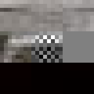
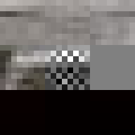
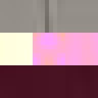
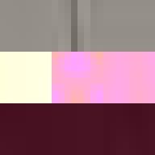

Proof of Work
— A study in digital materiality and finding value in randomness
hash: 00000000040c2cdd1ead096506e9a75f39d3f6f0c1de1bee500476914597fa9e
iterations: 24,537,468,650
duration: 7d 9h 41m 36s
Between 1501 and 1504 Michelangelo carved the over five-metre-tall statue of David from a single block of marble. This great masterpiece of Renaissance sculpture has become one of the most recognisable pieces of art. Through its material presence, the sculpture makes evident the labour and craft that went into its creation. However, few of us get to view the actual sculpture, most of us experience it through images on a screen. Yet, we still recognise the embodied effort. But what of the actual object most of us come in contact with, the image, the JPEG itself. Does it too embody the labour of its making and does it too have a materiality in its own right?
By design, the answer to both these questions would appear to be no. The ease of digital reproduction renders the labour in any one instance effectively zero. The success of JPEG as a medium relies on the very absence of materiality to facilitate transmission. Proof of Work is an attempt at altering the answer to these questions. By deliberately corrupting the compressed image data, the resulting errors reveal the underlying JPEG encoding. Digital materiality, understood here as the specific constraints of a medium influencing the appearance, emerges.
A single image of David is presented here as the final outcome. The image is the result of a random process and by extension the image too is random. So why choose this particular version over all others? The name Prof of Work is taken from a cryptographic puzzle used in Bitcoin and other cryptocurrencies. The only way to solve the puzzle is to try answers at random and the problem is formulated in a way that it takes a predictable number of attempts to solve it. David is the answer to one such puzzle formulated to imbue this particular instance with a measure of work.
The text that follows is a more in-depth look at the main technical explorations of the project. First a section on proof of work and then a section on the digital materiality of JPEGs.
Randomness and large numbers
A proof of work[1] can be described as a piece of data that is statistically difficult to produce but easy to verify. The Bitcoin cryptocurrency uses a proof of work system based on a version of the Hashcash[2] algorithm to secure its public ledger in a distributed, trustless setting. The same algorithm is used here to evaluate different permutations of David.
A hash function[3] takes a variable size input and maps it to a fixed size output. A good hash function should be, deterministic, uniform and quick. The same input should always yield the same output. The input domain should yield outputs that that are evenly spread across the output range and it should be cheap to compute. A cryptographic hash function[4] have additional requirements. It should be infeasible to predict the input knowing only the output and a small change in input should result in a large change in output, significant enough for the outputs to appear uncorrelated.
The version of the Hashcash algorithm used here requires one to find some input, that when passed twice through the SHA-256 function, produces an output (hash) which is smaller than some target value. Since SHA-256 is a cryptographic hash function there is no more efficient way to do this than simply iterating through possible inputs until the desired output is found. If the hash (a 256-bit value) is formatted as a hexadecimal string it takes on average 16^n attempts to find a hash with at least n leading zeros. To find a hash with at least three leading zeros takes on average 4,096 attempts, finding one with four takes 65,536 attempts and so on.
To add a block to the Bitcoin blockchain one is required to find a hash with (at the time of writing) at least 18 leading zeros. This number is set such that it takes approximately 10 minutes for the network of miners to find a solution[5]. The Initial intention was to use the same target for the image of David. However, a now obvious oversite was to not appreciate that the while it may only take the Bitcoin network, a global network of specialised hardware consuming about the same amount of energy as the entirety of Ireland[6], 10 minutes to find a solution, it would take a single machine significantly longer. To find a hash with at least 18 leading zeros requires on average 4,722,366,482,869,645,213,696 attempts, that’s 4.7 sextillion or approximately 3.9 billion years on a 16 x 3.00GHz core machine at 38358 hashes/second.
The name Proof of Work appears ironic, almost cynical in relation to the throwaway nature of the actual work involved. A statistically provable measure of time or more accurately clock cycles wasted. If a digital artefact outside the world of cryptocurrencies was to be ascribed work in this way, would this give it some innate value? While it took billions of iterations to find this particular incarnation of David, once found, it can be multiplied in an instant and so the original irony persists.
Digital Materiality
JPEG glitch tools like the ones by Justin Windle[7] and Georg Fischer[8] show how resilient the JPEG decoders found in web browsers are to corrupt input. They served as inspiration for writing a program[9] that progressively corrupts a JPEG image and feeds it to a hashing function keeping track of the lowest found hash.
The program locates the entropy-coded image data (more on this below) and alters it by flipping a single bit at a time in random order. When a maximum number of bits have been flipped the image is reset back to the original before proceeding to ensure that the image remains parsable.
When encoding an image as a JPEG file it is first converted from RGB to Y′CbCr space[10]. This space represents each pixel in terms of three channels, luminance (brightness), blue-difference (blue to yellow) and red-difference (red to green). The image is then split into 8x8 pixel blocks. Each block is then encoded as the summation of 64 wave patterns (basis functions) per channel using a process called discrete cosine transform (DCT)[11]. The basis functions are predefined as part of the JPEG standard so what is stored in the file is the amplitude (coefficient) for each function in the summation. The first of the 64 functions (the upper left corner in the image below) is completely flat and describes the average value across the pixel block. This is called the DC coefficient and is stored as an offset relative to the preceding pixel block. The remaining 63 functions are called AC coefficients; these are stored as absolute values.

Our visual perception is not very sensitive to high-frequency information. This is exploited by the lossy part of JPEG compression. Each of the 64 coefficients is quantized[12] by dividing it by a corresponding factor and then rounding to the nearest integer, thus removing some of the information. The coefficients corresponding to the higher frequencies (which are less important to the perception of the image) are divided by larger factors often turning the coefficients to zero, completely removing them from the image.
The quantized coefficients are run-length encoded and Huffman coded (referred to collectively as entropy coding in the context of JPEG)[13]. Run-length encoding allows sequences of zero value coefficients (resulting from the quantization step) to be replaced with a single symbol indicating the length the of the sequence preceding a non-zero coefficient, followed by an amplitude. These symbols are then encoded in a Huffman table, a type of lookup table allowing the most common values to be stored with the least number of bits[14].
When flipping a bit in the entropy coded data it alters the lookup which can have one of several effects. It can alter the coefficient, increasing or decreasing the weight of that particular basis function. It can alter the number of zeros preceding an amplitude, effectively shifting which basis function the coefficient applies to. Or it can cause the lookup to fail completely. Because Huffman coding is a variable length encoding, altering a single bit will have a knock-on effect on parsing subsequent values. The way DC coefficients are stored as a relative offset also contribute to the errors propagating across the image. To improve the resilience of the parsing, reset markers can be inserted at intervals of x number of blocks[15] and programs such as Photoshop will typically insert one at the start of each row of blocks. At these intervals, the DC coefficients are stored as absolute values and the parser is able to restart.
All of these errors can be seen in the image of David. Most evident is the striation from errors compounding across a row of blocks until a reset marker is hit. The wave patterns of individual basis functions appear oscillating, black-white, blue- yellow, and red-green where the coefficients and basis functions have fallen out of sync. Finally, rows are truncated as lookup failures cause some blocks to discarded in their entirety.
— Tobias Jewson, Oct 2018
References
- [1] https://en.wikipedia.org/wiki/Proof-of-work_system
- [2] https://en.wikipedia.org/wiki/Hashcash
- [3] https://en.wikipedia.org/wiki/Hash_function#Properties
- [4] https://en.wikipedia.org/wiki/Cryptographic_hash_function#Properties
- [5] https://en.bitcoin.it/wiki/Target
- [6] https://arstechnica.com/tech-policy/2018/05/new-study-quantifies-bitcoins-ludicrous-energy-consumption/
- [7] https://soulwire.co.uk/smack-my-glitch-up/
- [8] https://snorpey.github.io/jpg-glitch/
- [9] https://github.com/tobiasjewson/proof-of-work
- [10] https://en.wikipedia.org/wiki/YCbCr
- [11] https://en.wikipedia.org/wiki/Discrete_cosine_transform
- [12] https://en.wikipedia.org/wiki/JPEG#Quantization
- [13] https://en.wikipedia.org/wiki/JPEG#Entropy_coding
- [14] https://en.wikipedia.org/wiki/Huffman_coding
- [15] https://en.wikipedia.org/wiki/JPEG#Syntax_and_structure
A Catalogue of Errors


 

 
